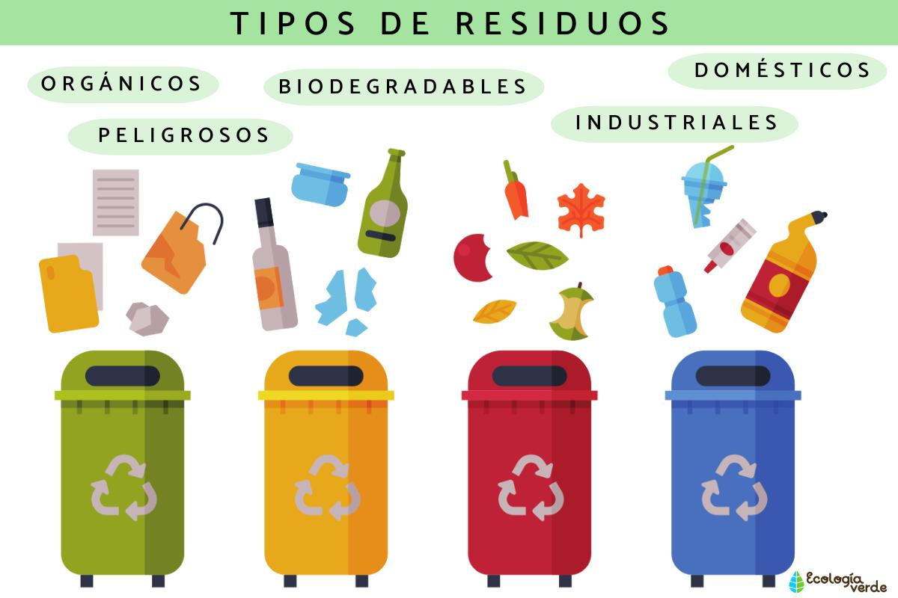
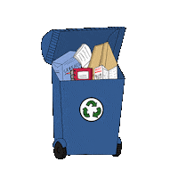

Los residuos son materiales, sustancias u objetos que pierden su utilidad o valor tras cumplir su misión, y que su poseedor desecha. A diferencia de la "basura" (que no se puede reutilizar), muchos residuos pueden ser reciclados, reutilizados o valorizados. Se generan en actividades domésticas, industriales, comerciales o de servicios.

Es cualquier material, objeto, sustancia o elemento en estado sólido o semisólido que se descarta tras el consumo o uso de un bien en actividades domésticas, industriales, comerciales o de servicios. Son productos de desecho sin utilidad inmediata para quien los genera, conocidos comúnmente como basura.

Es cualquier material, sustancia u objeto sólido, líquido o gaseoso derivado de procesos de fabricación, transformación, utilización, limpieza o mantenimiento generado por una actividad industrial. Estos desechos son inservibles para la empresa productora y, a menudo, requieren un tratamiento especial para evitar la contaminación ambiental, clasificándose generalmente en residuos peligrosos y no peligrosos.
Un residuo químico es cualquier sustancia, mezcla o material sobrante de procesos industriales, de laboratorio o domésticos que ha perdido su utilidad y presenta peligrosidad por sus características tóxicas, corrosivas, inflamables, reactivas o explosivas. Requieren manejo especial para evitar daños ambientales y humanos.